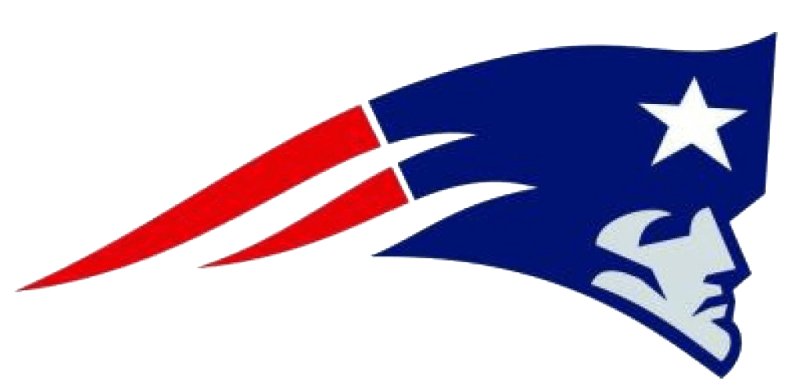
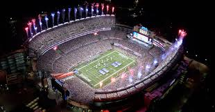

New England Patriots 
Történet:
A New England Patriots, becenevén a „Pats”, egy profi amerikai foci csapat a massachusettsi Foxborough-ban. A csapat az NFL AFC Keleti csoportjában szerepel. A csapat eredeti neve Boston Patriots volt, amit a tulajdonosok 1971-ben változtatták a jelenlegire, amikor áthelyezték a csapatot Foxboroughba.A Patriots, az American Football League (AFL) egyik alapító tagja, 1970-ben csatlakozott az NFL-hez, a két liga egyesülésekor. A csapat huszonháromszor jutott be a rájátszásba, 1986-ban bejutott a 20. Super Bowl döntőbe, ahol azonban alulmaradt a Chicago Bearsszel szemben. A csapat 1997-ben is bejutott a 31. Super Bowl nagydöntőbe, ahol a Green Bay Packerstől kapott ki. A Pats a második olyan csapat az NFL történetében (a Dallas Cowboys után), amely négy év alatt három Super Bowlt tudott nyerni (XXXVI, XXXVIII, XXXIX), és a nyolcadik, amely két egymást követő Super Bowlt is megnyert.
Eredmények:
Super bowlt nyertek 2001-ben, 2003-ban, 2004-ben, 2014-ben, 2016-ban és 2018-ban is. 11-szer jutott tovább elsőként a csoportjából.
Stadion:
1960 és 1962 között a Nickerson Field-ben, 1963 és 68 között a Fenway Park-ban, 1969-ben a Alumni Stadium-ban, 1970-ben a Harvard Stadium-ban, 1971 és 2001 között a Foxboro Stadium-ban és 2002 től mostanáig a Gillette Stadiumban-fogadták ellenfeleiket.
Gillette Stadium:
Kicsit kevesebb mint 66ezer ember befogadására képes és építési költsége meghaladta a 330millió dollárt. Megynitás előtt CMGI Field-nek akarták nevezni de a Gillette cég megvette a jogokat a névadáshoz.
